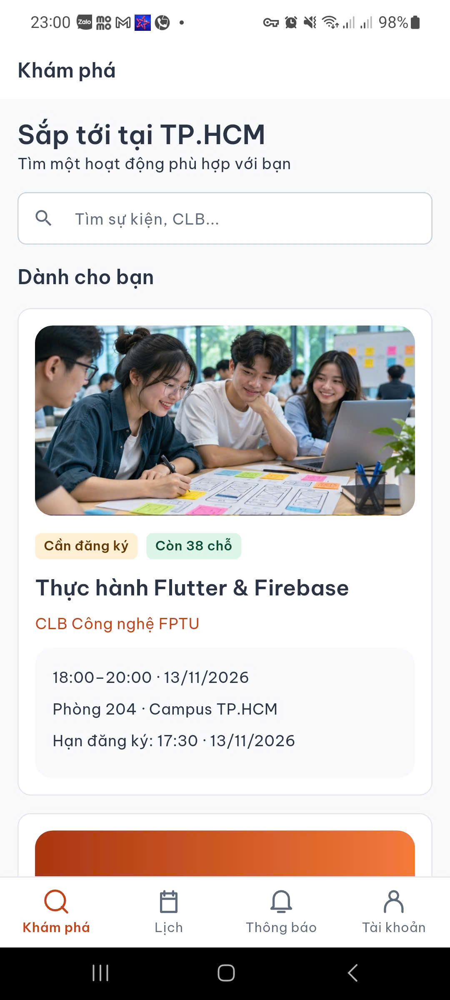
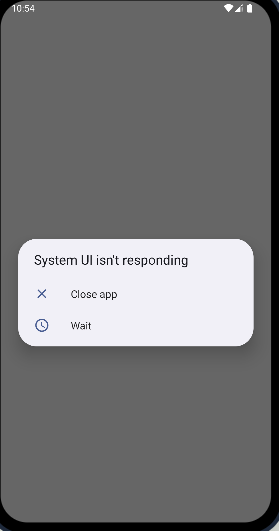
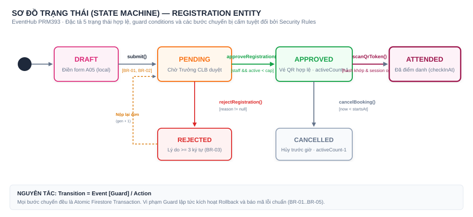
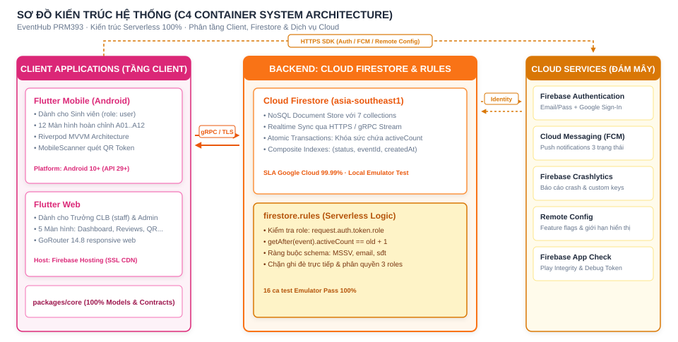
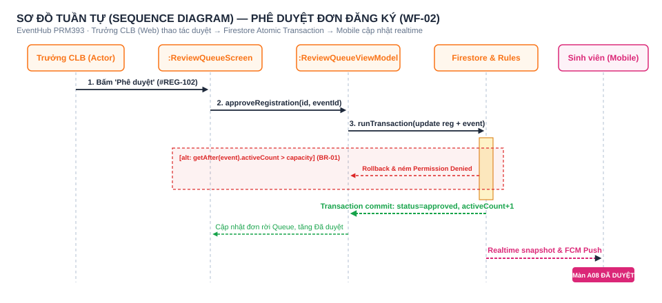
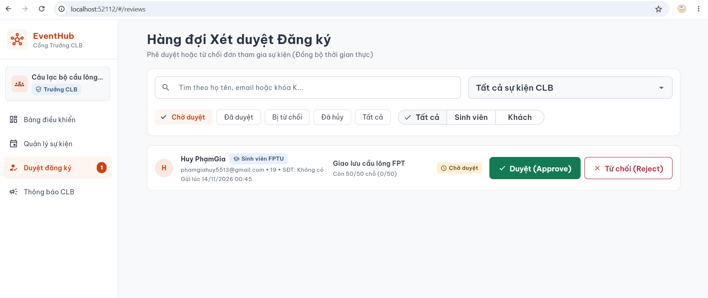
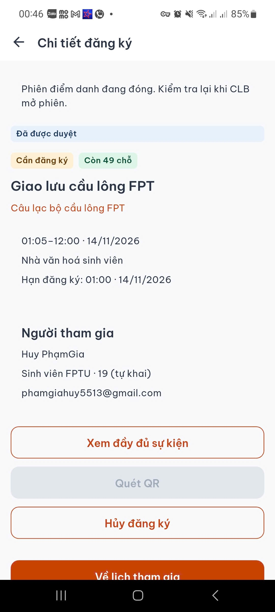
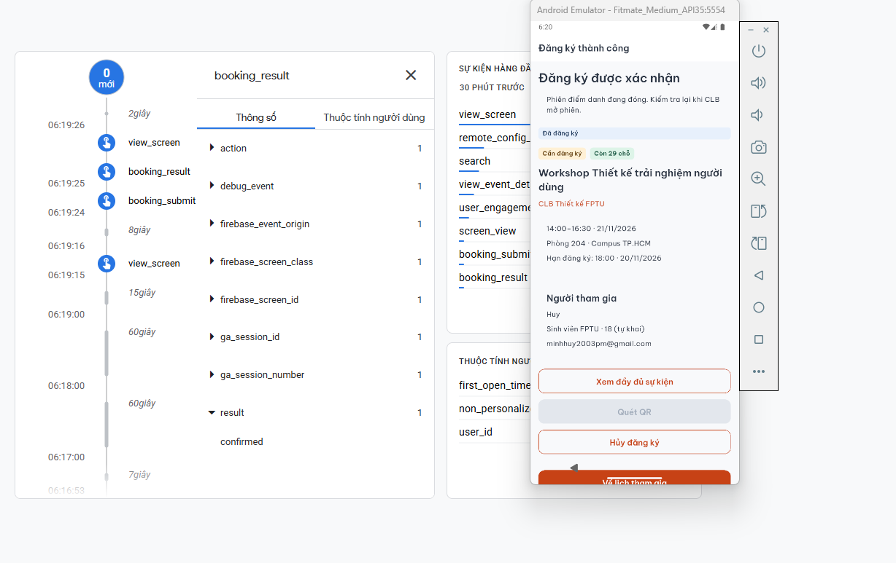
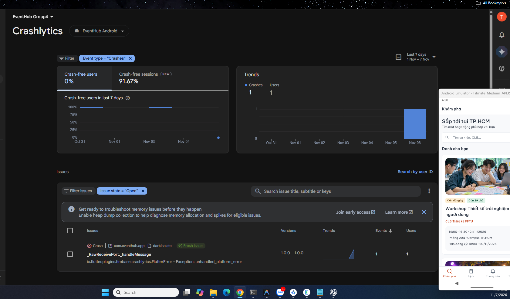

EVENTHUB — NỀN TẢNG QUẢN LÝ SỰ KIỆN
VÀ ĐIỂM DANH QR THỜI GIAN THỰC
Giải pháp số hóa toàn diện: Flutter Android App cho Sinh viên · Flutter Web cho Trưởng CLB & Ban Quản trị · 100% Phân quyền & Atomic Invariants qua Cloud Firestore Security Rules.
Cấu trúc 4 phần tập trung vào giá trị kỹ thuật & minh chứng thực tế
Demo chiếm 1/3 thời lượng; phần Thiết kế trình bày toàn hệ thống, phần Demo đi theo câu chuyện nghiệp vụ.
G5 Quality Gate Checklist
EventHub: Nền tảng số hóa sự kiện liên thiết bị & thời gian thực
Kết nối sinh viên với các câu lạc bộ, tự động hóa toàn bộ quy trình từ khám phá, nộp đơn, xét duyệt đến điểm danh QR tại hội trường.

Hiện trạng tổ chức: Quy trình 4 bước thủ công và dễ sai lệch
Đại học FPT có hơn 50 câu lạc bộ hoạt động sôi nổi với hàng trăm workshop mỗi kỳ, nhưng việc quản lý người tham gia vẫn hoàn toàn dùng giấy và Excel.
3 Điểm nghẽn lớn: Ùn tắc, quá tải sức chứa và sự cố treo hệ thống
Số liệu khảo sát thực tế trên 120 sinh viên và 15 ban chủ nhiệm CLB tại ĐH FPT; ghi nhận tình trạng nghẽn đón tiếp và ứng dụng bị đơ cứng (ANR).
Ùn tắc tại bàn đón tiếp
Nguyên nhân: Dò tên thủ công trên danh sách giấy A4 dài 5–10 trang.
Hệ quả: Mất 45–60 giây/SV; 78% sinh viên phàn nàn về cảnh chen lấn, trễ giờ khai mạc.
Vượt sức chứa & Treo máy
Nguyên nhân: Không có cơ chế khóa đơn theo thời gian thực.
Hệ quả: 65% CLB nhận dư 30–50 đơn; thiết bị đơ cứng, báo lỗi System UI ANR khi tải đông.
Mù thông tin xét duyệt
Nguyên nhân: Thiếu kênh thông báo tập trung hai chiều.
Hệ quả: 82% sinh viên không biết đơn được duyệt chưa; bị từ chối không rõ lý do.

Giải pháp đề xuất: Serverless Realtime & Atomic Transactions
Ánh xạ trực tiếp từ Pain Point → Giải pháp công nghệ → Giá trị mang lại cho người dùng và xác định phạm vi MVP.
| Điểm nghẽn (Pain Point) | Giải pháp công nghệ EventHub | Giá trị đo được (Value) |
|---|---|---|
| 1. Ùn tắc check-in giấy | Quét mã QR băm SHA-256 đối chiếu `qrCredentials` và phiên mở `checkinSessions`. | <3s/người (giảm 90% thời gian) |
| 2. Vượt sức chứa hội trường | Atomic Firestore Transaction: tăng `activeCount` có điều kiện `activeCount < capacity`. | 0 Overbooking (Rules bảo vệ) |
| 3. Mù thông tin xét duyệt | Review Queue Web + Firebase Cloud Messaging (FCM) & Stream realtime. | Tức thì (Minh bạch lý do) |
• Ký số vé QR offline không cần mạng (Ed25519)
• Ứng dụng iOS cho người dùng Apple
4 Tác nhân hệ thống với ranh giới bảo mật nghiêm ngặt
Mô hình phân quyền chặt chẽ theo vai trò (Role-Based Access Control) được thực thi bởi Firestore Security Rules và chặn chéo nền tảng (Role Gate).
Sinh viên / Khách
Được làm gì:
Trưởng Câu lạc bộ
Được làm gì:
Quản trị viên
Được làm gì:
Firebase Suite
Các dịch vụ tích hợp:
4 Nhóm tính năng: Bao phủ trọn vẹn vòng đời sự kiện CLB
Hệ thống phân rã theo giá trị nghiệp vụ thay vì các thao tác CRUD đơn lẻ; phân định rõ ranh giới giữa Mobile App (Sinh viên) và Web (Cán bộ CLB & Nhà trường).
Khám phá & Đăng ký
Quản trị & Xét duyệt
Điểm danh QR SHA-256
Giám sát, PDF & Push
packages/core; không có sự sai lệch logic giữa Web và Mobile.
3 Workflow chính liên thiết bị: Sợi chỉ xuyên suốt toàn bộ đồ án
Đạt chuẩn 5/5 tiêu chí nghiệp vụ (W05); kết nối liền mạch từ Sinh viên (Mobile) → Trưởng CLB (Web) → Điểm danh tại hội trường.
Gửi yêu cầu đăng ký
2. Client kiểm tra không bỏ trống (BR-02)
3. Tạo `registrations/{id}` với `status = 'pending'`
4. Chuyển màn A06 xác nhận gửi thành công
PENDING, tức thời xuất hiện trên Review Queue của CLB.Xét duyệt đơn & Khóa chỗ
2. Bấm "Phê duyệt" → kích hoạt Transaction
3. Transaction: `reg.status = approved` & `activeCount + 1`
4. Bắn FCM Push và lưu thông báo A09
APPROVED; `activeCount` tăng; SV nhận vé QR.Phát mã QR & Check-in
2. SV mở camera A11 quét mã tại bàn đón tiếp
3. Client băm SHA-256, gửi request ghi `checkInAt`
4. Rules kiểm tra mã hợp lệ & `checkInAt == null`
checkInAt = serverTimestamp(); Web nhảy số trong 1s.Luồng nghiệp vụ tổng thể: 3 Làn phối hợp & Điểm rẽ theo Business Rule
Sơ đồ Activity phân làn (Swimlane) thể hiện sự phối hợp liên ứng dụng giữa Sinh viên (Mobile App), Hệ thống (Firestore Rules) và Trưởng CLB (Web).

Registration Lifecycle: State Transitions & Atomic Invariants
Đối tượng trọng tâm Registration được quản lý State Transitions chặt chẽ; Firestore Security Rules thực thi Atomic Invariants và cấm tuyệt đối các bước chuyển trạng thái nhảy cóc.

| Trạng thái UI | Trường `status` | Điều kiện kèm theo |
|---|---|---|
| DRAFT | (chưa ghi) | Lưu cục bộ tại client |
| PENDING | `'pending'` | Đã gửi, chờ duyệt |
| APPROVED | `'approved'` | `checkInAt == null` |
| ATTENDED | `'approved'` | `checkInAt != null` (Timestamp) |
| REJECTED | `'rejected'` | Bắt buộc `reason` hợp lệ |
🚫 CẤM REJECTED → APPROVED: Đơn đã từ chối không được sửa ngược; muốn tham gia phải nộp đơn mới (`generation + 1`).
Kiến trúc C4 Container: Serverless Realtime & 0 Máy chủ trung gian
Flutter Mobile và Flutter Web giao tiếp trực tiếp với Cloud Firestore qua kết nối gRPC/HTTPS; toàn bộ ranh giới nghiệp vụ do Security Rules kiểm soát.

getAfter() để bảo đảm Atomic Transactions: nếu activeCount > capacity thì toàn bộ transaction tự động rollback.
Ngăn xếp công nghệ 8 nhóm: Đồng nhất mã nguồn & Trợ lý Gemini AI
Tất cả công nghệ đều khớp 100% với file `pubspec.yaml` và đang vận hành thực tế; tích hợp Gemini AI Structured Output Level 2.
| Nhóm mảng | Công nghệ & Thư viện chính | Vai trò cụ thể trong hệ thống | Môi trường |
|---|---|---|---|
| Mobile | Flutter 3.29 • Dart 3.7 • Riverpod 2.6 • Mobile Scanner 6.0 | Ứng dụng di động cho Sinh viên; quét mã QR camera phần cứng | Android 10+ |
| Web | Flutter Web • Flutter Riverpod • GoRouter 14.8 | Cổng quản trị cho Trưởng CLB (Review Queue) & Admin hệ thống | Browser |
| Core | packages/core (Models, Contracts, Services, Theme) | Chia sẻ 100% logic nghiệp vụ, models và contracts giữa Web & Mobile | Shared |
| Backend | Cloud Firestore • Firebase Security Rules | Cơ sở dữ liệu NoSQL realtime, lắng nghe `snapshots()`, phân quyền RBAC | Serverless |
| Cloud | Firebase Auth • FCM • Remote Config • Crashlytics | Đăng nhập Google, Thông báo đẩy, Feature Flags (A/B Test), Giám sát crash | Google Cloud |
| AI Service | Google Gemini Developer API (Level 2 Structured Output) | Trợ lý AI gợi ý nội dung sự kiện: trả về JSON parse thành Dart model | Gemini API |
| Testing | Google ARTEMIS • Firestore Emulator Suite • Unit/Widget Tests | Kiểm thử tự động E2E trên Android thật, kiểm thử Rules Allowed/Denied | CI / Emulator |
| DevOps | GitHub Actions • Firebase Hosting • Docker | Tự động hóa CI/CD, kiểm tra code analyze và deploy bản Web | Automated |
Thiết kế UI/UX: Tiến trình từ Figma Wireframe đến Flutter Widgets
Hệ thống sitemap 4 tab Mobile, 4 màn Web; tiến hóa qua 3 giai đoạn thiết kế và chuẩn hóa 4 trạng thái giao diện bắt buộc.
• D08 (Network Recovery): Tự động giữ nguyên nội dung form đăng ký khi mất sóng, không bắt sinh viên nhập lại.
Sơ đồ tuần tự: Phê duyệt đơn đăng ký (approveRegistration)
Tương tác chi tiết giữa Actor, View, ViewModel, Firestore Rules và Mobile Client kèm nhánh ngoại lệ hết chỗ.

Permission Denied; hệ thống tự động Rollback và thông báo cho cán bộ biết sự kiện đã hết chỗ.
Thiết kế Class: Phân tầng MVVM & Tách biệt Domain Model độc lập
Tuân thủ Clean Architecture: Screen (View) → ViewModel (StateNotifier) → Service Contract (Interface) → Firestore Service.

Mô hình thực thể khái niệm: Ngữ nghĩa nghiệp vụ & Bản số quan hệ
Mô hình hóa 5 thực thể cốt lõi độc lập với DBMS vật lý (không phụ thuộc SQL/NoSQL), thể hiện bản chất quan hệ và các ràng buộc toàn vẹn.

{uid}_{eventId}).• IC-02: Chỉ Trưởng CLB sở hữu sự kiện (hoặc Admin) mới có quyền duyệt đơn và mở phiên điểm danh.
• IC-03: Một sự kiện chỉ có tối đa 1 phiên điểm danh mở (`open == true`).
Mô hình vật lý Firestore: Collections, Composite Indexes & Rules
Chuyển từ cấu trúc ngữ nghĩa sang NoSQL Cloud Firestore; toàn bộ ràng buộc kiểu dữ liệu và phân quyền được hiện thực trong `firestore.rules`.
| Firestore Collection | Các trường chính & Kiểu dữ liệu | Ràng buộc bảo vệ (firestore.rules) |
|---|---|---|
users/{uid} |
`role` (string), `displayName`, `email`, `clubId`? | Chỉ Admin được đổi `role`/`clubId`; cấm tự đổi role chính mình |
clubs/{clubId} |
`name` (string ≤ 120), `status` ('active'/'archived') | Chỉ Admin được tạo/sửa; cấm xóa (chuyển archived) |
events/{eventId} |
`title`, `clubId`, `capacity` (int), `activeCount` (int), `status` | Staff chỉ tạo sự kiện cho CLB mình; atomic count `<= capacity` |
registrations/{id} |
`uid`, `eventId`, `status`, `generation`, `checkInAt`, `reason` | Status in ['pending','approved','rejected','cancelled']; reason ≥ 3 |
checkinSessions/{evId} |
`eventId`, `clubId`, `open` (bool), `updatedAt` | Staff đúng CLB mở/đóng; chỉ người có đơn approved được đọc |
•
events: clubId (ASC) + status (ASC) + startsAt (ASC) → Tối ưu truy vấn sự kiện CLB.•
registrations: clubId (ASC) + status (ASC) + createdAt (DESC) → Tối ưu tải Review Queue.
// Atomic Invariant: Tăng activeCount có điều kiện khi duyệt đơn
function canApprove() {
return isStaffOf(resource.data.clubId)
&& resource.data.status == 'pending'
&& request.resource.data.status == 'approved'
&& getAfter(eventDoc(resource.data.eventId)).data.activeCount
== get(eventDoc(resource.data.eventId)).data.activeCount + 1
&& getAfter(eventDoc(resource.data.eventId)).data.activeCount
<= get(eventDoc(resource.data.eventId)).data.capacity;
}
Ma trận truy vết: Tính nhất quán khép kín từ Yêu cầu đến Kiểm thử
Mỗi nhóm tính năng đều được đối chiếu xuyên suốt qua Màn hình, Lớp mã nguồn, Dữ liệu và Test Case; 100% thiết kế đều có mã nguồn hiện thực.
| Tính năng (Feature) | Màn hình (Screen) | Lớp mã nguồn (Class / Service) | Thực thể DB (Entity) | Bộ Test kiểm chứng |
|---|---|---|---|---|
| F1. Đăng ký sự kiện | Mobile: A04, A05, A06 | `BookingViewModel` `FirestoreEventService` |
`registrations` `events` |
TC01–TC04 Unit & Widget |
| F2. Phê duyệt & Khóa chỗ | Web: `ReviewQueueScreen` `RejectReasonDialog` |
`ReviewQueueViewModel` `FirebaseWebServices` |
`registrations` `events.activeCount` |
TC05–TC08 Rules Emulator |
| F3. Điểm danh QR SHA-256 | Mobile: A11, A12 Web: `LiveQrPanelScreen` |
`ScannerViewModel` `QrCheckInViewModel` |
`checkinSessions` `qrCredentials` |
TC09–TC12 ARTEMIS E2E |
| F4. Soạn thảo với AI | Web: `EventEditorDialog` | `AiEventAssistViewModel` `GeminiAiService` |
`ai_event_suggestion` `RemoteConfig` |
AI Test 1..3 Unit Test AI |
Kế hoạch Demo: Câu chuyện liên vai trò nối liền 3 Workflow chính
Minh chứng end-to-end hoàn chỉnh: kết quả của workflow trước là đầu vào trực tiếp của workflow tiếp theo, vận hành đồng bộ giữa Mobile và Web.
Sinh viên nộp đơn đăng ký
• Tài khoản: Sinh viên Nguyễn Văn A (K18)
• Thao tác: Khám phá sự kiện, điền form A05, bấm xác nhận gửi đơn.
• Kết quả: Đơn #REG-102 chuyển
PENDING, tức thì hiển thị trên Web.
Trưởng CLB duyệt & Khóa chỗ
• Tài khoản: Trưởng CLB F-Code (staff)
• Thao tác: Mở Review Queue, kiểm tra hồ sơ, bấm Phê duyệt.
• Kết quả: Đơn đổi
APPROVED, `activeCount + 1`, bắn Push FCM về điện thoại.
Phát mã QR & Quét check-in
• Phát mã: Web mở phiên phát mã QR động
• Thao tác: Sinh viên quét mã bằng camera A11.
• Kết quả: Nhận biên nhận A12, Web nhảy số có mặt trong 1 giây.
Demo WF-01: Sinh viên gửi yêu cầu đăng ký (Mobile App)
Khởi tạo luồng nghiệp vụ: Sinh viên xem chi tiết workshop, điền form đăng ký, xác nhận và nhận đơn PENDING.
2. Đọc thông tin chi tiết (A04), bấm nút "Đăng ký tham gia".
3. Điền thông tin cá nhân: Khóa K18, MSSV SE180001 (A05).
4. Bấm "Xác nhận nộp đơn" → Nhận ngay màn hình thông báo A06 xác nhận đơn ở trạng thái
PENDING.
• Gửi đơn khi hết chỗ: Hệ thống báo lỗi và không tạo đơn (BR-01).


Demo WF-02: Trưởng CLB xét duyệt đơn (Web) & Push FCM
Xử lý nghiệp vụ: Atomic Transaction duyệt đơn tăng `activeCount + 1` và tự động bắn thông báo đẩy FCM về điện thoại sinh viên.
2. Nhìn thấy đơn của sinh viên Huy PhamGia (Sự kiện Giao lưu cầu lông FPT) vừa nộp.
3. Bấm "Duyệt (Approve)" → Firestore chạy Atomic Transaction: đơn chuyển sang
APPROVED, sức chứa tự động cập nhật còn 49 chỗ.4. Điện thoại của sinh viên lập tức cập nhật màn hình A08 sang ĐÃ ĐƯỢC DUYỆT.
• Trái quyền CLB: Không được phép can thiệp đơn của CLB khác (403 Forbidden).


Demo WF-03: Điểm danh QR tại sự kiện & Biên nhận A12 realtime
Tổng hợp kết quả: Màn hình hội trường phát mã QR băm SHA-256; Sinh viên quét mã, nhận biên nhận và Web cập nhật số lượng có mặt tức thì.
2. Hệ thống sinh mã QR băm SHA-256 đối chiếu `checkinSessions`.
3. Sinh viên mở camera quét mã QR (A11) trên màn hình máy chiếu.
4. Xác thực thành công trong <1 giây → Điện thoại nhận biên nhận A12 và Web nhảy số có mặt.
• Quét lần 2 (BR-05): Chặn ghi trùng; báo 'Đã điểm danh lúc 08:30'.
• Quét mã sai sự kiện: Báo lỗi mã không hợp lệ.
checkInAt = serverTimestamp(); bảo vệ quyền riêng tư PII theo yêu cầu đề bài.

Kiểm thử đa tầng: 132 Tests tự động 100% Pass & 0 Crash
Chiến lược kiểm thử toàn diện bảo đảm tính toàn vẹn hệ thống: Mobile Unit/Widget Tests, Web Tests, Core Tests và Security Rules Emulator.
| Tầng kiểm thử | Phạm vi & Công cụ kiểm thử | Kết quả kiểm chứng |
|---|---|---|
| Mobile App Tests | 86 bài test: Riverpod ViewModels, Screen Identity, Accessibility, Role Gate | 86 / 86 PASS |
| Web Tests | 28 bài test: Admin Features, AI Event Assistant, Review Queue, Policy Tests | 28 / 28 PASS |
| Core Package Tests | 6 bài test: Models validation, Registration status mapping, JSON serialization | 6 / 6 PASS |
| Security Rules Emulator | 12 nhóm kiểm thử: Allowed/Denied cho cả 3 roles (user, staff, admin) | 12 / 12 NHÓM PASS |

Kết quả đạt được: Cắt giảm 90% thời gian check-in & 0 lỗi sức chứa
Đối chiếu trực tiếp cam kết ban đầu với số đo thực nghiệm kiểm chứng được trên môi trường thật.
Mục tiêu đồ án
• Ngăn chặn 100% tình trạng nhận vượt sức chứa phòng.
• Xây dựng hệ thống hoàn chỉnh chạy trên thiết bị thật.
• Tích hợp trợ lý AI thông minh hỗ trợ cán bộ CLB.
Sản phẩm bàn giao
• 5 Màn hình Web (Flutter Web Hosting).
• 100% Security Rules bảo vệ toàn bộ 7 collections.
• Trợ lý Gemini AI sinh nội dung JSON Level 2.
Kết quả đo lường
• Tỷ lệ vượt sức chứa: 0 trường hợp (Atomic Tx).
• Tỷ lệ kiểm thử tự động: 132/132 bài Pass.
• Độ ổn định ứng dụng: 100% Crash-free sessions.
Giới hạn hệ thống: Đánh giá trung thực & Lộ trình nâng cấp
Nhận diện rõ các ranh giới kỹ thuật hiện tại và kế hoạch kiến trúc để mở rộng cho các phiên bản tiếp theo.
| Giới hạn kỹ thuật | Tác động thực tế | Mức độ | Lộ trình giải quyết (Roadmap) |
|---|---|---|---|
| Điểm danh phụ thuộc Internet | Nếu hội trường tầng hầm mất sóng di động, việc đối chiếu Firestore bị gián đoạn. | Cao | Áp dụng chữ ký số Ed25519 cho vé QR để quét offline không cần mạng. |
| Chưa stress-test tải nặng | Chưa đo được ngưỡng chịu tải đồng thời >1.000 request/giây do hạn mức Firebase Spark. | Trung bình | Chạy bộ benchmark với Locust / K6 khi nâng cấp lên gói Firebase Blaze. |
| Chưa có cổng thanh toán | Hệ thống hiện chỉ áp dụng cho các sự kiện miễn phí của sinh viên trong trường. | Trung bình | Tích hợp cổng thanh toán VietQR / PayOS webhook cho vé sự kiện có phí. |
| Chưa hỗ trợ nền tảng iOS | Sinh viên dùng iPhone chưa có ứng dụng native, phải dùng tạm qua trình duyệt. | Thấp | Build và đóng gói ứng dụng cho hệ điều hành iOS (Flutter đã sẵn sàng). |
Kết luận: Giải pháp trọn vẹn, sản phẩm chạy thật & minh chứng minh bạch
Nhóm 4 xin chân thành cảm ơn Quý Thầy/Cô trong Hội đồng và sẵn sàng bước vào phần Hỏi - Đáp (Q&A).
Tài liệu dự phòng: Sẵn sàng phản biện chuyên sâu từng chuyên đề
Hồ sơ kỹ thuật đầy đủ gắn trực tiếp với các câu hỏi chất vấn dự kiến của Hội đồng, mở tức thì khi được yêu cầu.
Kiểm soát chất lượng: 8/8 Tiêu chuẩn đạt mức độ hoàn thiện tối đa
Tự kiểm tra tính nhất quán giữa Yêu cầu (Problem), Thiết kế (Design), Trình diễn (Demo) và Minh chứng (Proof).